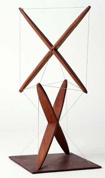
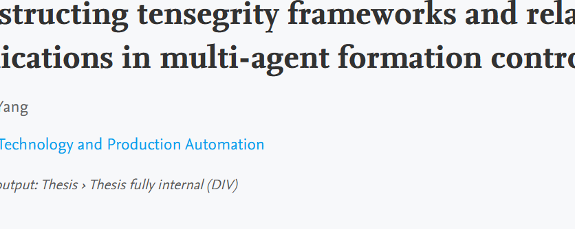

Constructing tensegrity frameworks and related applications in multi-agent formation control
.
Yang, Qingkai.
[Groningen]: University of Groningen, the Netherlands, 2018.

Distributed Estimation and Cooperative Control of Multiple Lagrangian Systems
.
Yang, Qingkai.
[Beijing]: Beijing Institute of Technology, China, 2018.